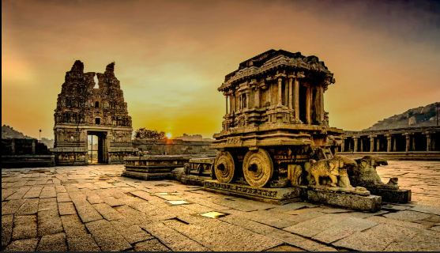
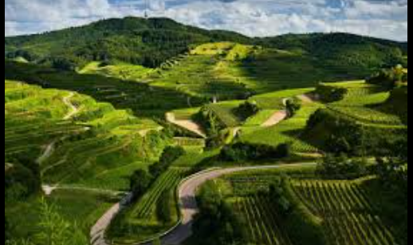

Karnataka
Major Projects
- Bengaluru Metro Rail Project
- Upper Bhadra Irrigation Project
- Smart City Mission Implementation
Ongoing Developments
- Expansion of IT parks in Bengaluru
- Development of industrial corridors
- Improvement of rural road connectivity
Importance of the State
Karnataka is a leading IT hub of India, known for its
technological innovation, rich heritage sites, and diverse culture.
Tourist Attractions
Mysuru Palace

|
Hampi

|
Coorg

|